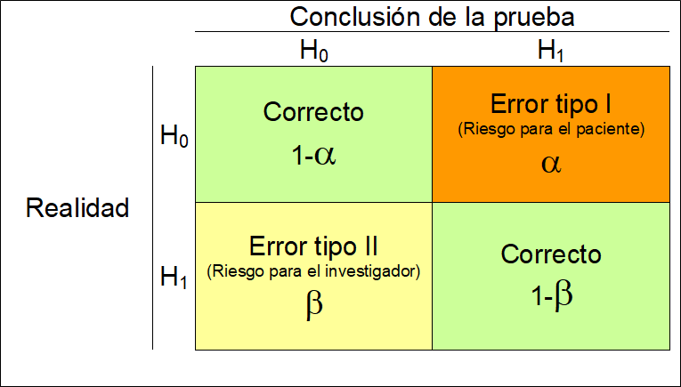

5 Pruebas de Hipótesis
En la siguiente figura podemos observar un esquema general de cómo abordar un problema científico desde un punto de vista estadístico. Partimos de una pregunta científica que nos planteamos sobre nuestra población de estudio. Esta pregunta debe ser traducida a una pregunta estadística que nos permita saber cómo abordarla desde un punto de vista matemático o estadístico.

Esquema investigación científica
Por ejemplo, imaginemos que estamos interesados en saber si el consumo de aspirina reduce el riesgo de sufrir un infarto de miocardio. Hay un método muy sencillo de saber qué problema necesitamos abordar desde un punto de vista estadístico a partir de nuestra pregunta científica y es conocer la naturaleza de nuestros datos. En este caso, nuestra variable resultado sería sufrir o no un infarto, por lo que estaríamos ante una variable binaria. Este tipo de variables se resumen con la frecuencia relativa o proporciones. De esta forma, la pregunta estadística se traduciría cómo: ¿La proporción de personas que sufren un infarto es igual en aquellas personas que toman aspirina que en las que no toma?
Para contestar a esta pregunta, el método científico nos indica que debemos tomar una muestra aleatoria (para garantizar representatividad de nuestra problación) que describiremos con métodos descriptivos vistos en el tema anterior. También podemos realizar un experimento o diseñar un estudio que nos permita contestar a nuestra pregunta cienífica. Existen muchos tipos de diseños, que se suponen que son familiares para el alumno.
Para nuestro ejemplo podríamos, entre otras opciones, diseñar un estudio en el que estudiáramos personas que han sufrido un infarto y otro grupo control de la misma edad y sexo a los que preguntaríamos si han tomado o no aspirina durante los últimos años (diseño caso-control). Entonces, podríamos compararla proporción de infartos entre las personas que toman y no toman aspirina. Empezaríamos por mostrar estas diferencias de forma visual con, por ejemplo, un gráfico de barras (que es como se visualizan las variables categóricas). Ahora nuestra siguiente pregunta sería saber si las diferencias que observamos son reales o son debidas al azar (es decir, por no estudiar toda la población y si una muestra aleatoria). Para demostrar que estas diferencias son reales (e.g estadísticamente significativas) debemos realizar lo que se conoce como inferencia estadística, que en este caso correspondería a una prueba de hipótesis.
En el caso que nuestra pregunta científica esté asociada a una variable continua se abordaría de la misma forma. La única diferencia es que la prueba de hipótesis planteada sería distinta. Por ejemplo, supongamos que queremos saber si el consumo de café aumenta la tensión arterial. En ese caso, nuestra variable resultado es tensión arterial, que al ser continua se resume con la media. Así pues, nuestra pregunta estadística sería: ¿La media de tensión arterial es igual en los consumidores de café que en los que no consumen?
En consecuencia, las pruebas que nos planteamos para comparar ambos grupos (A y B) en cada ejemplo sería
\[H_0: p_A = p_B\]
y
\[H_0: \bar{x}_A = \bar{x}_B\]
respectivamente.
Una vez planteadas las pruebas de hipótesis, basta con usar un software estadístico para calcular el p-valor que es la medida que nos indica si las diferencias observadas en nuestra muestra son reales o son debidas al azar. En otras palabras, demostramos si las diferencias observadas son estadísticamente significativas. Como decimos, el proceso para determinar esta significación estadística se basa en el cálculo del p-valor, y consideraremos que las diferencias serán estadísticamente significativas si el p-valor\(<0.05\) y no cuando ocurra lo contrario.
A este valor de \(0.05\) se le conoce como el nivel de significación estadística (\(\alpha\)) y es el valor que asumimos como riesgo a equivocarnos cuando las diferencias no son reales. En la siguiente figura podemos ver un resumen del tipo de errores que podemos cometer cuando llevamos a cabo una prueba de hipótesis
 A modo de resumen podríamos decir que los pasos en un proceso de investigación serían:
- Formular hipotesis nula (y alternativa)
- Decidir el nivel de significanza estadística (\(\alpha\))
- Eligir un test estadístico a utilizarse (que dependerá del tipo de variable que estudiemos)
- Calcular el p-valor con ese test y decidir si rechazamos \(H_0\) o no.
Para entender un poco mejor este procedimiento, podems compararlo con el simil de un jurado. Es importante notar que siempre partimos de la hipótesis nula y que queremos dar evidencias a partir de nuestros datos, nunca hacemos lo contrario, al igual que pasa en un juicio
Símil del jurado en pruebas de hipótesis
A continuación explicaremos cómo llevar a cabo estas pruebas de hipótesis con R en función de nuestra variable de interés para las siguientes pruebas.
En este capítulo se muestran las funciones que hay disponibles en R para realizar prueba de hipótesis para:
- la media \(\mu\),
- la proporción \(p\),
- la varianza \(\sigma^2\),
- la diferencia de medias \(\mu_1-\mu_2\) para muestras independientes y dependientes (o pareadas),
- la diferencia de proporciones \(p_1 - p_2\), y
- la razón de varianzas \(\sigma_1^2 / \sigma_2^2\).
Para ilustrar estos cálculos usaremos la base de datos multicentric.txt que hemos trabajado en capítulos anteriores. Para ello, recordemos que primero debemos cargar los datos en R tal y como se ha descrito en el capítulo @ref{importar}, o bien con el menú o bien con la siguiente instrucción.
NOTA: recordad que para que esta instrucción funcione debéis cambiar el directorio de trabajo a la carpeta que contenga este fichero.
5.1 Prueba de hipótesis para \(\mu\) de una población normal
Para realizar este tipo de prueba se puede usar la función t.test que tiene la siguiente estructura.
t.test(x, y = NULL,
alternative = c("two.sided", "less", "greater"),
mu = 0, paired = FALSE, var.equal = FALSE,
conf.level = 0.95, ...)Los argumentos a definir dentro de t.test para hacer la prueba son:
x: vector numérico con los datos.alternative: tipo de hipótesis alterna. Los valores disponibles son"two.sided"cuando la hipótesis alterna es \(\neq\),"less"para el caso \(<\) y"greater"para \(>\).mu: valor de referencia de la prueba.conf.level: nivel de confianza para reportar el intervalo de confianza asociado (opcional).
Ejemplo
Supongamos que queremos saber si la edad de la primera relación sexual es a los 18 años. Lo primero que debemos hacer es comprobar si los datos siguene una distribución normal. Para ello usaremos una libería que tiene una batería de 10 pruebas distintas que se llama nortest. Para usarla, primero hay que instalarla
y luego podemos evaluar si la variable es normal usando cualquiera de los tests implementados, de la siguiente forma
Lilliefors (Kolmogorov-Smirnov) normality test
data: multicentric$edad1sex
D = 0.12136, p-value < 2.2e-16Nosotros hemos usado la prueba de Lilliefors (Kolmogorov-Smirnov) pero se pueden usar otras como la de Anderson-Darling (función ad.test) o Shapiro-Francia (función sf.test) entre muchas otras.
Podemos ver que rechazamos la hipóteisis nula de normalidad ($p<0.05), por lo que necesitmos solventar este problema. Normalmente esto se hace transformando los datos usando la transformación logarítmica. Luego volvemos a testar la normalidad para ver si podemos aplicar el test para la media. Para ello crearemos primero una nueva variable que llamaremos edad1sex2.
y ahora aplicamos el test a la nueva variable
Lilliefors (Kolmogorov-Smirnov) normality test
data: multicentric$edad1sex2
D = 0.088069, p-value < 2.2e-16